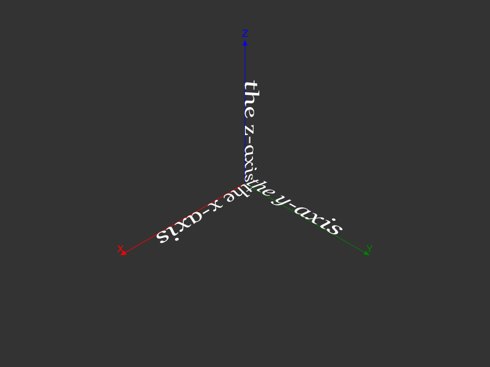
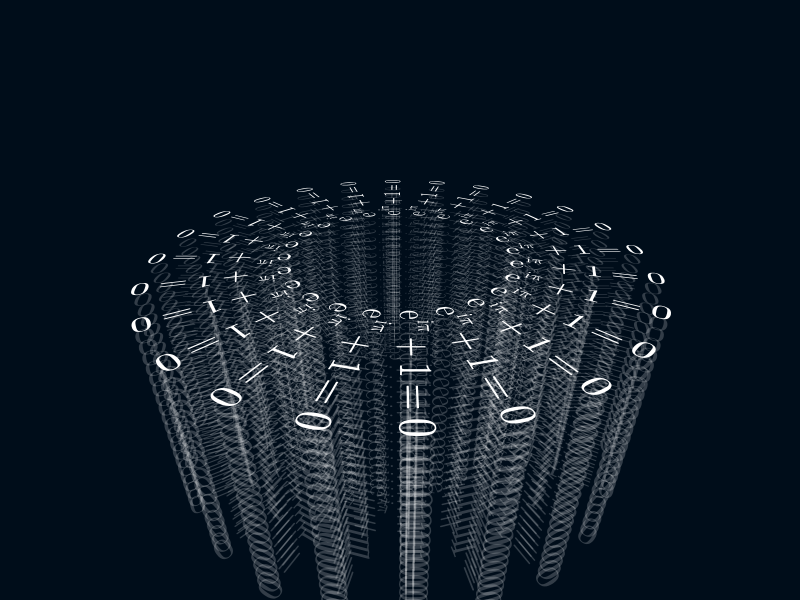

Text
Thebes provides a text3D() function that draws text on a 2D plane in 3D space.
For more information about using fonts and font selection, refer to the "Text" chapter in the Luxor documentation.
You specify the 3D location of the text's 'anchor' point, and optionally supply rotations and text alignment (halign etc.). By default, the text in Thebes (as in Luxor) runs along the x-axis, and lies in the xy plane.
Use Rotations.jl to specify rotations.
@drawsvg beginfontsize(50)background("grey20")setlinejoin("bevel")eyepoint(Point3D(250, 250, 250))perspective(400)sethue("white")axes3D(220)fontsize(40)fontface("Georgia-Italic")text3D("the x-axis", Point3D(0, 0, 0))text3D("the y-axis", Point3D(0, 0, 0), rotation=RotZ(deg2rad(90)))text3D("the z-axis", Point3D(0, 0, 0), rotation=RotX(-deg2rad(90)) * RotZ(deg2rad(90)), halign=:right)end 800 600
The three main differences between Luxor.text() and Thebes.text3D() are the anchor position (a Point3D), the about keyword, and the rotation keyword.
You can see that the the y-axis text has been rotated around the Z axis by 90°.
The the z-axis text is aligned right, so it starts off on the negative part of the x-axis. The first rotation - in the z-axis - sends the text to be aligned with the y-axis, such that the 's' is almost touching the origin. Then the 90° clockwise rotation about the x-axis lifts the text up to run along the z-axis.
Rotations.jl is doing all the hard work here: in the construction RotX(...) * RotZ(...), the z-axis rotation is applied first.
You can also use some of Luxor's text functions, such as textextents(), which helps you get the (2D) dimensions of text.
using Thebes, Luxor, Colors, Rotations@drawsvg begineyepoint(Point3D(250, 250, 550))perspective(500)fontsize(50)te = textextents("Julia")for y in -1200:te[3]:1200 for x in -1200:te[4]:1200 sethue(HSB(mod(x*y, 360), .6, .9)) text3D("Julia", Point3D(x, y, 0), about=Point3D(x, y, 0), rotation=RotZ(π/2)) end endend 800 800
It's also possible to write math equations in $\LaTeX$ by passing a LaTeXString to the text function. Thebes (and Luxor) use MathTeXEngine.jl and LaTeXStrings.jl to parse the LaTeXString.
using Thebesusing Luxorusing Rotationsusing MathTeXEngineusing LaTeXStrings@svg begin background(0.0, 0.05, 0.1) helloworld() perspective(500) eyepoint(300, 300, 250) sethue("white") fontsize(30) setline(1) for z in -150:10:50 setopacity(z < 50 ? 0.2 : 1) e = L"e^{i\pi} + 1 = 0" for i in 0:π/12:2π-π/12 text3D(e, sphericaltocartesian(100, i, π / 2) + Point3D(0, 0, z), about = sphericaltocartesian(100, i, π / 2), rotation = RotZ(i)) end endend 800 600 "/tmp/text3.svg"
Thebes.text3D — Function
text3D(str, anchor::Point3D;
halign=:left,
valign=:baseline,
about=Point3D(0., 0., 0.),
rotation::Rotation=RotXYZ(0, 0, 0))Draw text at point pt, lying in the plane of the x axis. Angles in rotation rotate the text about the about point, defaulting to Point3D(0, 0, 0).
Uses Luxor's fontface() and fontsize() settings.
Specify rotations using functions from Rotations.jl, such as:
RotX(a)RotZ(a)RotXZ(a1, a2)RotXYZ(a1, a2, a3)